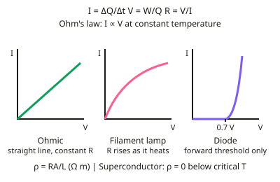

A-level Physics Year 12 · Topic 6
Electricity
Electricity at A-level explains current at the level of moving charge carriers, and gives you the tools to analyse any circuit.
We will look at current, resistance and resistivity, drift velocity, I–V characteristics, power and the kilowatt-hour, and superconductors.
Then we use Kirchhoff's laws, EMF, internal resistance and potential dividers, and carry out the practicals on resistivity and internal resistance.
- 8 subtopics
- 517 questions
- Free: 6.1 notes and 10 questions
In this topic
- 6.1Current, resistance and resistivityFree below · 71 questions
- 6.2Circuits, EMF and potential dividersOpen in Full Marks · 76 questions
- 6.3Charge carriers and drift velocity (I = nAvq): conductors, semiconductors and insulatorsOpen in Full Marks · 65 questions
- 6.4I–V characteristics: ohmic conductors, filament lamps, diodes, thermistors and LDRsOpen in Full Marks · 73 questions
- 6.5Electrical energy and power: P = IV, I²R, V²/R and the kilowatt-hourOpen in Full Marks · 69 questions
- 6.6Superconductivity and critical temperatureOpen in Full Marks · 68 questions
- 6.7Practical: determining the resistivity of a wireOpen in Full Marks · 26 questions
- 6.8Practical: determining the EMF and internal resistance of a cellOpen in Full Marks · 69 questions
6.1 · Free notes
Current, resistance and resistivity

Key points
- Current I = ΔQ ÷ Δt. Potential difference V = W ÷ Q. Resistance R = V ÷ I.
- Ohm's law applies to an ohmic conductor at constant temperature: current is proportional to potential difference.
- I-V characteristics: an ohmic conductor gives a straight line through the origin; a filament lamp curves as resistance rises with temperature; a diode conducts only above a threshold in the forward direction.
- Resistivity ρ = RA ÷ L, measured in Ω m; it depends on the material and temperature.
- In a superconductor, resistivity falls to zero below the critical temperature, allowing lossless current and very strong electromagnets.
In more detail
- Worked resistivity: a 2.0 m constantan wire (ρ = 4.9 × 10⁻⁷ Ω m) of diameter 0.40 mm → A = 1.26 × 10⁻⁷ m² → R = ρL/A = 7.8 Ω.
- Doubling length or halving diameter: doubling L doubles R; halving d quarters A, so R increases four times.
- Worked charge: 0.25 A for 2 minutes → Q = 0.25 × 120 = 30 C.
- Temperature and resistance: metals' resistance rises with temperature (ions vibrate more); semiconductors' falls (more charge carriers released).
Practice
Current, resistance and resistivity: 10 questions
Pick an answer to check it, or open the answer for the explanation.
1. What is the unit of resistivity?
- Ω
- Ω m
- Ω/m
- V A
Show answer
B: Ω m. ρ = RA ÷ L gives units of Ω × m² ÷ m = Ω m.
2. How does the resistance of a filament lamp change as current increases?
- It decreases
- It increases as the filament heats up
- It stays constant
- It becomes zero
Show answer
B: It increases as the filament heats up. The I-V graph curves away from a straight line.
3. A charge of 12 C passes a point in 4 s. What is the current?
- 0.33 A
- 3 A
- 16 A
- 48 A
Show answer
B: 3 A. I = Q ÷ t = 12 ÷ 4 = 3 A.
4. What happens to a superconductor below its critical temperature?
- Resistivity increases
- Resistivity drops to zero
- It melts
- It stops conducting
Show answer
B: Resistivity drops to zero. This allows current with no energy loss as heat.
5. Which graph shows an ohmic conductor?
- A curve through the origin
- A straight line through the origin
- A horizontal line
- A line with a threshold voltage
Show answer
B: A straight line through the origin. Constant resistance gives a straight line I-V graph.
6. A wire's length is doubled but its cross-sectional area and material stay the same. What happens to its resistance?
- Halves
- Doubles
- Stays the same
- Quadruples
Show answer
B: Doubles. R = ρL ÷ A, so resistance is directly proportional to length.
7. Which combination of two identical resistors, R, gives the smallest possible total resistance?
- In series
- In parallel
- Either, they are equal
- Neither combination works
Show answer
B: In parallel. Parallel resistors always give a resistance smaller than either individual resistor.
8. A current of 2.5 A flows through a lamp for 3.0 minutes. How much charge passes through it?
- 27 C
- 450 C
- 7.5 C
- 0.83 C
Show answer
B: 450 C. Q = It, with t = 180 s: 2.5 A × 180 s = 450 C. Using 3.0 as the time in minutes gives the wrong answer of 7.5 C.
9. Which statement correctly defines the potential difference between two points?
- Power transferred per unit current in the circuit
- Force exerted per unit charge on a conductor
- Energy transferred per unit charge between the points
- Charge passing per unit time
Show answer
C: Energy transferred per unit charge between the points. V = W ÷ Q, so 1 volt is 1 joule per coulomb. Charge per unit time is current, not potential difference.
10. A wire is replaced by one of the same material and length but double the diameter. What happens to its resistance?
- It halves
- It doubles
- It becomes one quarter
- It stays the same
Show answer
C: It becomes one quarter. Area is proportional to diameter squared, so doubling the diameter gives 4 times the area. R = ρL ÷ A, so resistance falls to one quarter.
Keep going in Full Marks
Full Marks has 71 questions on Current, resistance and resistivity (61 more than here), set out in practice levels. You also get notes and 3D models for all 8 subtopics of Electricity, plus games, timed exams and past papers.